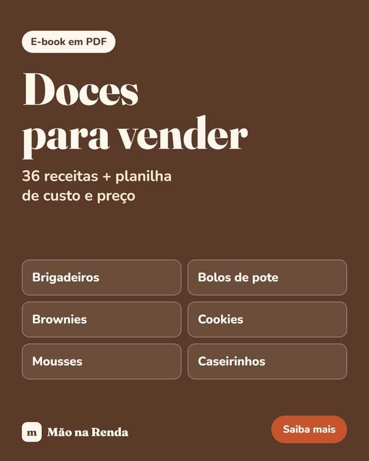

Na cozinha
Doces para vender
Receitas com medida em gramas e em xícara, o ponto de cada etapa, validade, embalagem e a planilha que mostra quanto custa cada unidade antes de você definir o preço.
A partir de R$ 10.